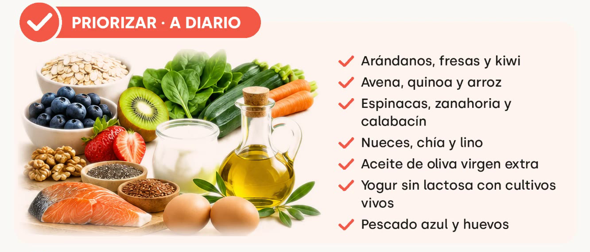
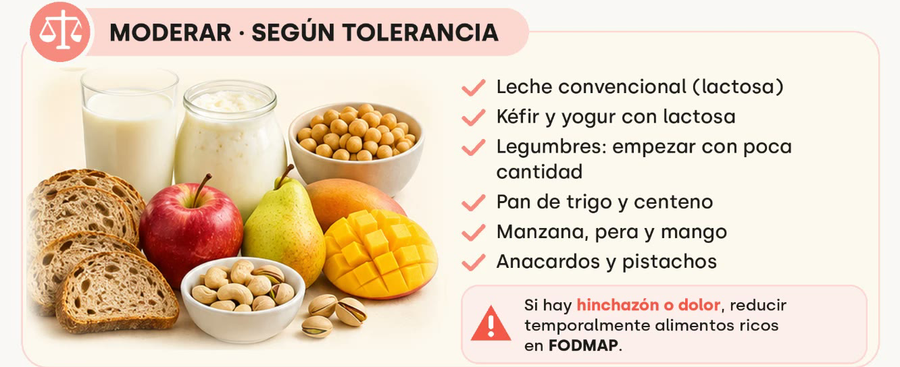
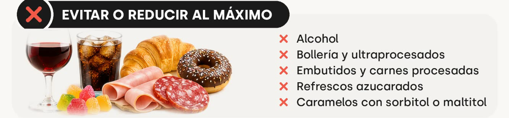

Aprende tu metabolismo
¿Hinchazón, acidez, mal descanso?
A veces la respuesta no está en lo que comes, sino en quién lo digiere contigo.
Desliza →
Hacemos visible lo invisible
A veces la respuesta no está en lo que comes, sino en quién lo digiere contigo.
Desliza →
Convivir con ello no lo convierte en normal. Muchas veces detrás hay un desequilibrio de la microbiota.

Fibra variada, grasas buenas y fermentados: lo que alimenta a las bacterias que te interesan.

Aquí no hay norma general: lo que a una persona le sienta bien, a otra la hincha.

Alcohol, ultraprocesados y edulcorantes tipo sorbitol o maltitol son los que más la castigan.
Una dieta baja en FODMAP se usa un tiempo y con síntomas. Después se reintroduce.
Desliza →
glucovibes.com